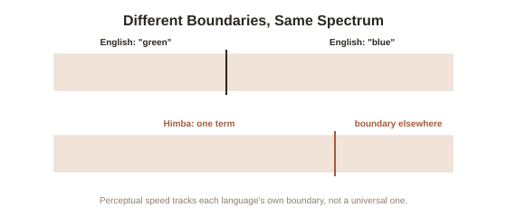

Chapter 3: Color and Categorical Perception Across Languages
Chapter 1 introduced linguistic relativity through spatial direction language, and Chapter 2 established that grammar has a genuine critical window while other language capacities stay more flexible. This chapter turns to the single most thoroughly tested domain for linguistic relativity — color — where decades of increasingly careful cross-linguistic and neuroscientific research have produced a genuinely nuanced, well-evidenced answer to how much language shapes perception itself.
Berlin and Kay: color terms aren't random across languages
Before relativity could even be properly tested, researchers had to establish how color vocabulary actually varies across languages — and anthropologists Brent Berlin and Paul Kay's 1969 survey of color terms across nearly a hundred languages found something that initially looked like strong evidence against relativity: languages don't carve up the color spectrum randomly or arbitrarily. Berlin and Kay found a strikingly consistent pattern — languages with few basic color terms reliably distinguish black/dark and white/light first; if a third term exists, it's reliably red; additional terms are added in a predictable, cross-linguistically consistent order (green and yellow, then blue, then brown, then the rest). This universal hierarchy suggested color categorization might be governed largely by shared human biology (the physiology of color vision) rather than by language shaping perception freely in different directions for different cultures.
The Himba color study: real perceptual differences, tied to real category boundaries
More recent research found real relativity effects sitting alongside Berlin and Kay's universal structure, rather than contradicting it. The Himba people of Namibia have a color vocabulary that draws its category boundaries differently from English — notably, using a single term for what English speakers split into "blue" and "green," while drawing certain other distinctions (among shades English lumps together) that English speakers don't linguistically mark at all. Researcher Jules Davidoff and colleagues tested Himba speakers on a task requiring them to quickly identify the one differently-colored square among a grid of otherwise identical squares. Himba speakers were measurably faster than English speakers at spotting an odd square that crossed a boundary marked in their own language but not in English, and measurably slower at spotting a difference within their own single, unmarked green-blue category that English speakers, with separate words for the two colors, found easy. The categories a language marks appear to measurably tune perceptual speed at exactly the boundaries language draws — a real, testable relativity effect, operating within the broader universal structure Berlin and Kay identified.

Winawer's Russian blues: relativity down to hemisphere and reaction time
Russian draws a hard grammatical distinction English doesn't have at all: goluboy (light blue) and siniy (dark blue) are treated as two entirely separate basic color terms in Russian, the same categorical status as English's "blue" and "green," rather than as light and dark shades of one color the way an English speaker would naturally describe them. Psychologist Jonathan Winawer and colleagues tested Russian speakers on the same odd-square-out task Davidoff used with the Himba, and found Russian speakers were faster than English speakers specifically at discriminating two blues that crossed the goluboy/siniy boundary — but, in a particularly striking refinement, that speed advantage disappeared when participants were simultaneously given a verbal interference task (repeating a string of digits out loud), which occupies the language-processing resources the color categorization appeared to be silently drawing on. This is unusually strong, mechanistic evidence for relativity specifically: not just a correlation between language and perception, but a demonstration that actively blocking language processing in real time measurably erased the perceptual advantage that language had been providing.
The honest, calibrated conclusion this research supports
Taken together, these three lines of research support neither the strong linguistic determinism Chapter 1 already dismissed (language doesn't create color perception from nothing — Berlin and Kay's universal hierarchy shows real, shared biological constraints operating across all languages) nor a picture where language has no perceptual effect at all (the Himba and Russian studies show real, measurable, mechanistically-demonstrated effects of specific category boundaries on perceptual speed). The accurate picture is a weaker, more precise form of relativity: language doesn't determine what can be perceived, but it does measurably tune the speed and ease of perceptual discrimination right at the specific boundaries a given language happens to draw — a real, small, but rigorously demonstrated effect, exactly the size and shape Chapter 1's "weak" linguistic relativity predicted, now backed by decades of increasingly careful, mechanistically-specific evidence rather than the more impressionistic early claims the field started with.
Try this
Ideas for noticing or testing this in your own life.
- Look at a gradient of blue-to-green shades and notice where you draw your own mental boundary between "blue" and "green" — then consider that a Himba speaker's boundary, and a Russian speaker's within-blue boundary, are drawn in genuinely different places, each shaping their own perceptual speed.
- Try the Winawer-style interference test informally: while repeating a phrase out loud, try quickly distinguishing two very similar shades of a color — notice whether it feels harder than doing the same task in silence.
Worth pulling on?
A few loose threads from this chapter — if any of these genuinely grab you, that's a good sign of where to go next.
- If language can measurably tune perception in monolingual speakers, a natural next question is what happens inside a single mind that holds two full language systems, with two different sets of category boundaries, at once. → The subject of the next chapter: bilingualism and its cognitive effects.
- The Himba and Russian studies are a good model of well-designed, mechanistically specific research — worth contrasting with weaker, more popularized claims about language and thought that haven't held up as well. → Already in the library: Philosophy of Science's chapter on the replication crisis covers what separates well-evidenced findings like these from weaker ones.